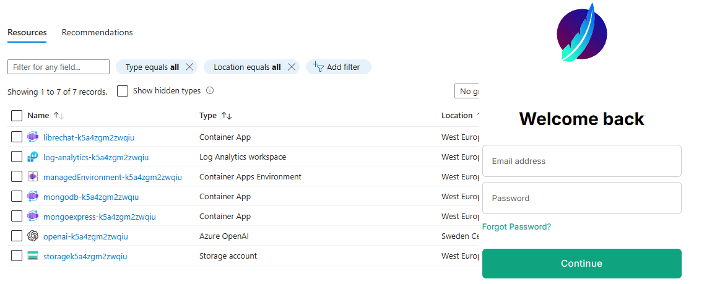

Setup LibreChat in Azure Container Apps with Bicep

Introduction
This post is by our summer intern, Louis de Fromont, who is helping out tailoring the excellent LibreChat open source AI chat platform to use in projects specifically hosted in Azure. This bicep template can have you up and running in short order!
Take it away Louis!
Using the script
This Bicep script is the first small project that I’ve been working on at Elumention and is used to deploy a fully functional LibreChat instance to Azure. If you’ve been looking for an example to model your own script, hopefully, this blog post should help by highlighting some of the specifics when working with LibreChat. If you’re just interested in getting the deployment up and running, you can take a look at the deployment instructions.
At a high level, this script creates a managed environment for containers hosting LibreChat, a MongoDB instance, and a Mongo Express web interface, with support for optional Azure Active Directory authentication. Additionally, it sets up a Cognitive Services account for OpenAI, creates storage accounts and file shares for configurations, and automates uploading the librechat.yaml file for configuration.
At the heart of the deployment are the three different container apps:
- LibreChat container app:
- MongoDB container app:
- Image: bitnami/mongodb:7.0.7
- Mongo-Express container app:
- Image: mongo-express
- Provides an admin web UI to MongoDB.
All three container apps use public images from Docker Hub.
Additionally, two file shares are deployed:
- MongoDB file share:
- Mounted for the MongoDB container app to persist its database contents.
- LibreChat file share:
- Used to mount the
librechat.yamlfile for LibreChat.
- Used to mount the
As part of the deployment script, the librechat.yaml file is processed and uploaded to the deployed file share for use by the LibreChat container app. The processing is done by first loading the contents of the file in Bicep using loadTextContent('../librechat.yaml') then a series of replace() functions are called on the loaded text to replace the API key and instance name of the OpenAI group. The key and instance name are loaded dynamically from the OpenAI service created as part of this script. After replacing the loaded YAML file, the contents are uploaded to the LibreChat file share via a deployment script. I based the code to write this deployment script based on a Bicep file by Mattias Fjellström.
OpenAI Service Creation and Model Deployment:
To create the OpenAI service, a cognitive service account is first provisioned to manage the AI model deployments. Then, models are deployed based on the configuration defined in the models.json file. The deploymentName property for each model in the models.json file should match the corresponding deploymentName property in the librechat.yaml file. This external configuration is accomplished in the Bicep script using the loadJsonContent('./models.json') function and an iterative loop over every model. One note about this loop is I had to include the @batchSize() decorator above the loop to limit the deployments of the models to one at a time. This is to avoid an error I commonly got in Azure when deploying models in parallel stating that “another operation is being performed on the parent resource” (the parent resource being the OpenAI service).
A separate parameter in the script is available for configuring the location of the OpenAI service and its deployments. This is because not all regions have the same mode deployments available which is why you might want to deploy the OpenAI service in a separate region than the rest of the resource group. To ensure compatibility and availability of OpenAI models in your selected region, consult the Model Summary Table and Region Availability guide. This provides detailed information on which AI models are available in specific OpenAI service regions.
Configuring Optional Authentication for Mongo-Express:
To limit access to the Mongo-Express container app, an optional parameter called createMonogexpressAuthConfig is available. When set to true, an Azure AD app registration and authentication configuration is created, adding Azure AD as an identity provider for Mongo-Express. This is accomplished natively in the Bicep script using the Microsoft.Graph/applications@v1.0 resource type. However, as of the time of writing, it is still an experimental feature and has just recently entered a public preview. Instructions to configure Bicep to work with Microsoft graph resources can be found here.
Because this is an experimental feature, not all features are fully supported, for example, attempting to re-run the Bicep script after setting up the Azure AD app registration can result in an error from the Azure CLI because the app registration resource already exists and modifications to an active app registration can’t be made. This is another reason I chose to make this part of the script be enabled with the createMonogexpressAuthConfig parameter, with the idea being you set the parameter to true on the initial deployment, then keep it false on subsequent deployments to avoid having this part of the script cause the rest of the deployment to fail.
Louis de Fromont
June 3, 2024